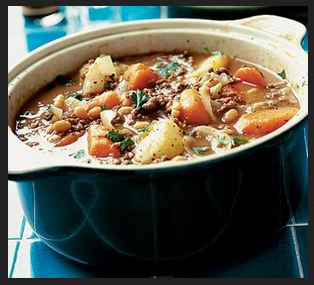

beef hotpot recipe

Description
Easy and testy beef hotpot recipes.
Ingredients
- 2 onions
- 300g carrots
- 1kg potatoes
- 450g lean minced beef
- 2 beef stock cubes
- 400g can baked beans
- splash of Worcestershire sauce
- handful of roughly chopped parsley (optional)
Steps
- Cut each onion into eight wedges. Roughly chop the carrots and
cut the potatoes into large chunks. Put the kettle on.
- Heat a large non-stick pan, add the mince and fry quickly, stirring
all the time, until evenly browned. Crumble in the stock cubes
and mix well. Add the prepared vegetables, stir them around,
then pour in 900ml/1½ pints of hot water from the kettle. Bring
to the boil.
- Reduce the heat, cover and simmer for 25-30 minutes, until the
veg are tender. Stir in the baked beans and a generous splash of
Worcestershire sauce and heat through. Taste and add salt and
pepper if necessary.
- Scatter over the parsley, then ladle the hotpot into bowls. Put the
Worcestershire sauce bottle on the table in case anyone fancies
a bit more spice.